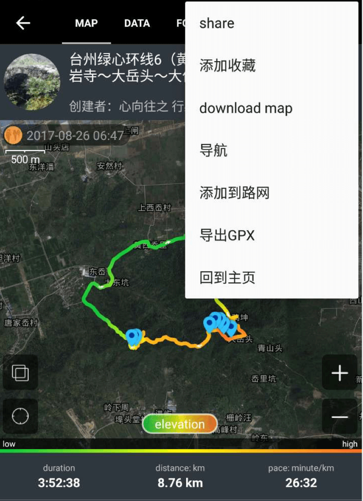
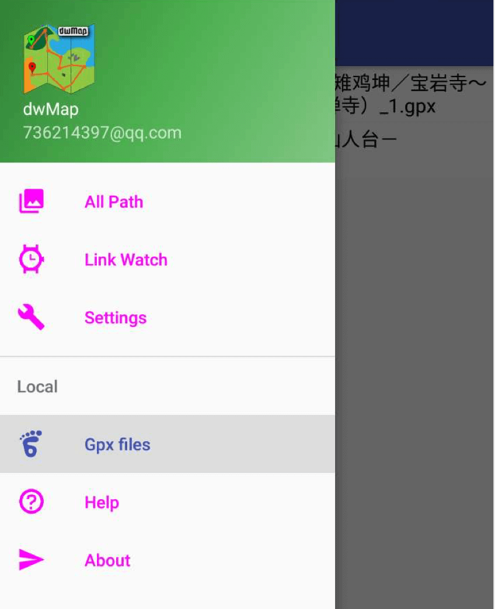

此软件主要用于Garmin的应用dwMap同步路径使用，方便您在身边没有电脑的时候同步数据记录到您的带蓝牙传输的设备中，尤其是手表。
本app还有额外一个功能，就是可以把六只脚的数据，给同步上传到dwMap的系统中，同时可以同步到设备中。
可以通过以下步骤进行上传：
1. 六只脚选择一个活动路径
2. 点击右上角的菜单按钮，选择下载gpx文件
从一系列的选项中选择下载选项

3. 打开dwMap，拉出左边的抽屉按钮，选择Gps files，主界面出现刚才下载的文件，轻触后可以选择上传文件。
好了现在翻开六只脚的目录文件夹，发现下面有下载好了的文件
4. 上传成功后，文件即可出现在所有路径中。最后可以通过设置默认路径，同步设备操作。

谢谢
2017年 8月29日